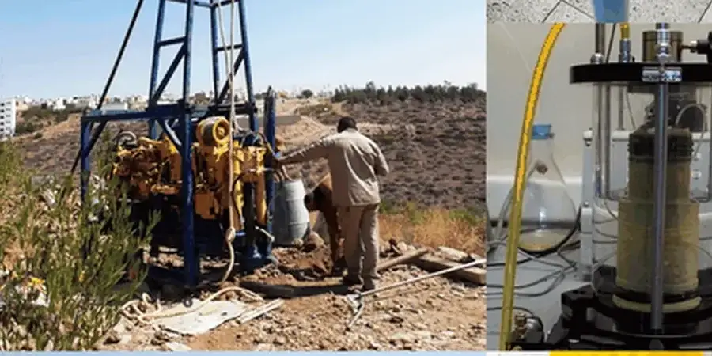

Austin’s rapid growth demands geotechnical expertise that understands local ground behavior. Our firm delivers comprehensive site characterization, foundation design, subsurface investigation, and construction monitoring across the region. We combine consolidated regional experience with calibrated equipment to provide code-compliant reports that support safe, efficient development. From residential subdivisions to commercial towers, our team integrates site-response-analysis and field-permeability testing to address Austin’s unique subsurface conditions. Whether you’re building on the Edwards Plateau or the Blackland Prairie, we offer practical solutions grounded in local knowledge and national standards.
